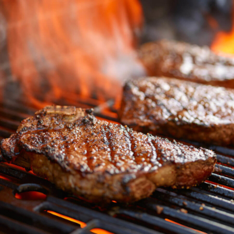

Grilled Rump Steak

Serves - 1 :: Prep Time - 5 min :: Cooking time - 5 min
The grilled rump steak recipe is a favourite of mine, it's a quick and simple way to cook a juicy delicious steak on the Weber BBQ.
Great with hot chips!
Ingredients
- 600g rump steak - about 1.5cm thick
- Salt (& black pepper if you like)
Intructions
- Preheat Weber BBQ to 220 deg - grill plates on both sides.
- Sprinke salt (& black pepper if you like) on boths sides of the rump steak.
- Cook on both side for 2 mins and 30 secs each, make sure to close the lid while cooking.
- Let the rump steak sit for 15mins before eating.
Back to homepage